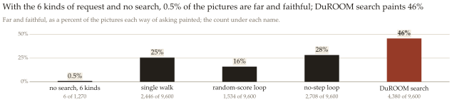
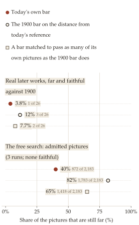

Q11 What did we find?
We froze the corpus at 1900 and let DuROOM search look for pictures far from it (Q10). So did it find anything, and what? It started from 5 works painted before 1900. 46% of the pictures it painted are far from the works before 1900 and come back near what we asked for, i.e., far and faithful (Q7).
For scale, the search’s 2 controls, the same loop told random scores, reach 16% with the step and 28% without it. With no search, 0.5% of the pictures painted from the 6 kinds of request in Q9 are far and faithful. Of the pictures painted from requests read from noise images, 20% are (Q7). A single walk reaches 25% (Figure 1).
We then set each far and faithful picture against the art we have today (all 172,171 works we keep, dated or not). The manifold line is a pair of distances, one per observer, set so that 99% of 2,048 repainted real works have their nearest real work within it in at least one observer. A picture is on the manifold when a real work sits within the manifold line of it in at least one observer, and off the manifold when none does in either (Q7).

On the manifold
Of the far and faithful pictures, 92% are on the manifold, and 88% have a dated later work within the manifold line and no dated earlier one.1 We say these pictures sit where art went only after 1900. For each picture we take the real works within the manifold line of it and read their dates (Figure 2). 4% have a work dated before 1900, and under 1% have only undated works (by start and by observer in the appendix). Figure 4 shows one picture with a work dated before 1900 within the manifold line. Figure 3 shows some pictures where art went only after 1900.
30% of the far and faithful pictures have a large leftover share and a dated later work within the manifold line and no dated earlier one. A picture’s leftover share is the part of it that the 32 main directions of the works before 1900 miss. It is large when, in both observers, it is over the share that 99% of the repainted works before 1900 lie below (Q7).2 Among the repainted real works from 1970 on that are far and faithful, 29% are of this kind, with both conditions. Many of the search’s pictures of this kind sit close to one another. If we keep them in the order painted, each only when it is more than the minimum gap from every one kept before, 14% of them remain. A picture with a large leftover share is badly described by the art before 1900. Whatever the dates near them, 35% of the search’s far and faithful pictures have a large leftover share.
What does a later work within the manifold line tell us? Where the picture sits, and not that it is art. Most far and faithful pictures of any procedure have one: 87% of those among the repainted real works from 1970 on, and all but one of those the decoder paints from noise. The decoder was not limited to images from before 1900, and the Discussion takes this up. Q12 compares the search with its controls.
![Two panels of four horizontal strips, one strip per loop and one for the single walk. Each strip is split by the real works within the manifold line: a work dated before 1900; none before 1900 and a work dated 1900 or later; only an undated work; no real work. Each part prints its percent of the loop's far and faithful pictures, with the count small. All far and faithful pictures: the search, 4,380: 4.1% (180), 88% (3,850), 0.4% (19), 7.6% (331); the random-score loop, 1,534: 4.3% (66), 81% (1,247), 2.2% (34), 12% (187); the no-step loop, 2,708: 31% (834), 63% (1,714), 2.0% (53), 4.0% (107); the single walk, 2,446: 2.5% (60), 84% (2,065), 1.8% (44), 11% (277). Those with a large leftover share: the search, 1,538: 0.7% (11), 85% (1,314), 0.5% (8), 13% (205); the random-score loop, 87: 0% (0), 79% (69), 2.3% (2), 18% (16); the no-step loop, 36: 5.6% (2), 36% (13), 31% (11), 28% (10); the single walk, 541: 76% (412) in the second part, and 24% (129) not split.](figures/dated_split_v4.svg)
![Four rows, one per starting work, each with the starting work, the picture DuROOM search painted, and a real work dated 1900 or later, each credited; beside the pictures (under them on a phone), a fact line with the round and, in DINOv3 and SigLIP, the nearest real work and its distance against the manifold line. The rows: Jan Cossiers, The Martyrdom of St Catherine, 1641 / the painted picture, round 50 / Piero Dorazio, Untitled, 1990; Alfred Sisley, Two Women Walking along the riverbank, 1885 / the painted picture, round 38 / Gene Davis, Royal Veil, 1971; Vincent van Gogh, Blossoming Branches, 1890 / the painted picture, round 55 / Hossein Zenderoudi, Crowns of Love, 1972; Edgar Degas, Seated Woman pulling her glove, 1890 / the painted picture, round 32 / Piero Dorazio, Untitled, 1990. In each row no work dated before 1900 lies within the line in either observer. Each fact line ends with our reading by eye of the picture beside its real work. 2 of the 4 have the same nearest work in SigLIP; for each, no work dated before 1900 lies within the line.](figures/search_finds_main_v2.svg)
![Two rows, each labelled. Row 1, “DuROOM search, with a work dated before 1900 within the line”: from Vincent van Gogh, Blossoming Branches, 1890, the picture painted in round 58, and the work dated before 1900 that places it, Otto Eckmann, Wallpaper design, 1899, 0.745 in DINOv3 against the line 0.763. Fact line: in DINOv3 the nearest real work is Alighiero Boetti, Mimetico, undated, 0.690; in SigLIP Kuno Gonschior, Ulramarin, 1994, 0.721, within 0.830. Row 2, “DuROOM search against today's reference: faithful and on the manifold”: the starting work named only, Pavel Filonov, Composition (A Raid), 1931; the picture painted in round 36; and Richard Pousette Dart, From the Edge of Darkness, 1992, the nearest real work in SigLIP, 0.691 against 0.830. In DINOv3 the nearest is Kenny Scharf, Hurdy Gurdy, 2008, 0.836, beyond the line 0.763. No work dated before 1900 within the line in either observer.](figures/finds_earlier_today_v1.svg)
From different starts, the same later works
Pictures from different starts often arrive at the same later works, and each start also keeps works of its own. For each picture where art went only after 1900, take its nearest real work dated 1900 or later within the manifold line (in each observer). 80% of these pictures sit at works reached from 3 or more of the 5 starts (Table 1), and 32 works are reached from all 5. The starts meet at stripe painting and op art: Gene Davis’s Flamingo (1965) alone is reached by 32% of the pictures, from every start.3 Compared with its controls at equal size (113 pictures from each start for each loop), 62% of the search’s pictures sit at works reached from 3 or more starts, against 37% for the random-score loop and 0% for the no-step loop.4
Off the manifold
8% of the far and faithful pictures are off the manifold: no real work of any date sits within the manifold line of them, in either observer (Figure 5). Their nearest real work sits at a median distance of 0.88 in DINOv3 and 0.87 in SigLIP, where the manifold line is 0.76 and 0.83. 69% of the pictures off the manifold come from one start, Fra Angelico’s. 62% of them have a large leftover share. For scale, 5% of the far and faithful repainted real works from 1970 on are off the manifold. And here the starts do not meet: for a picture off the manifold, the nearest such picture from another start sits at a median distance of 1.11 in DINOv3, against 0.52 for one from its own start.
Do pictures from different starts meet in one place that no real work sits near? They do not, for any loop, and for the 2 controls this follows from how few eligible pictures they have.5 To test it we ran the 3 loops from 5 other works, dated 1807 to 1931. We scored them against today’s reference, 2,048 repainted works of every date, in place of the works before 1900, so that far means far from all the art we have. There, 18% of the search’s pictures are faithful and off the manifold, against 0.6% and 1.4% for its controls (Figure 7, Figure 6).6 81% are faithful and on the manifold (Figure 4, second row). The test counts eligible pictures. A picture is eligible when it is faithful, has no real work within the manifold line, and is read as away from the repainted works by AIMv2 too, the encoder kept out of the loop.7 The test asks whether eligible pictures from 3 or more of the 5 starts lie close together in one place. Real works far from their past do not meet either. Among the works from 1970 on that are far from the works before 1970, with 5 groups of artists as the starts, the same rule finds no place in any of 20 groupings, though it does find places among as many works from 1970 on that are not far.8 Far later works sit apart from one another, and where they gather it is one artist’s series. So this test does not tell the search’s pictures off the manifold apart from real far art.
So what is far from the works before 1900 is mostly not far from today’s art. Scored again against today’s reference, nearly all of the search’s far and faithful pictures are no longer far,910 and nearly all of the real later works are not either (Figure 8).
![Three rows from the runs frozen at 1900, 2 of the 5 starts. Each row: the starting work (Jan Cossiers, The Martyrdom of St Catherine, 1641, shown; Fra Angelico, Madonna of Humility, 1419, twice, named only); the picture DuROOM search painted; its nearest real work in SigLIP; and beside them a fact line: the round; in SigLIP, the distance to the work shown against the line (0.830); in DINOv3, the nearest real work against its line (0.763); no real work within the line in either observer; a large leftover share. Round 7: Robert Silvers, Mona Lisa Remastered, undated, 0.864; in DINOv3 Andy Warhol, Crowd, 1963, 0.798. Round 15: Horacio Garcia Rossi, Untitled, undated, 0.873; in DINOv3 Roy Lichtenstein, Jet pilot, 1962, 0.907. Round 28: Guy Mees, Lost Space, 1989, 0.899; in DINOv3 Karel Appel, undated, 0.932.](figures/search_finds_off1900_v5.svg)
![Five rows from the runs against today's reference, each with the starting work, the picture DuROOM search painted, and the nearest real work of any date, each credited. Beside each row, a fact line with the round and the nearest real work in DINOv3 and in SigLIP against each line; no real work within the line in either observer. The rows: Orest Kiprensky, 1807 / the painted picture, round 14 / Alfred Freddy Krupa, The Eye (Kristina Muc), 2015; Orest Kiprensky / the painted picture, round 15 / Noma Bar, Biker, for Mercedes Benz, 2017; Orest Kiprensky / the painted picture, round 14 / Nuri İyem, Eyes, 1979; Käthe Kollwitz / the painted picture, round 5 / Zdzisław Beksiński, undated; Konstantin Gorbatov / the painted picture, round 28 / Grazia Varisco, 2008. Each fact line ends with our reading by eye; for 3 of the 5 we find the picture unlike the real work shown.](figures/search_finds_today_v4.svg)
![Five panels, one per start, each with two horizontal bars for each loop as a percent of the 1,920 pictures a run painted, the count small. The solid bar is eligible (faithful, off the manifold, and away for the held-out encoder too); the open bar is faithful and off the manifold. The search: start 1 24% (465) and 28% (545); start 2 2.6% (50) and 7.7% (148); start 3 12% (238) and 25% (486); start 4 2.5% (48) and 4.5% (86); start 5 13% (246) and 22% (429). The random-score loop: 0% (0) and 0.2% (3); 0.1% (1) and 0.1% (1); 0% and 0%; 0.2% (3) and 0.6% (12); 0.2% (3) and 2.1% (41). The no-step loop: 0% (0) and 0.3% (5); 0.1% (1) and 0.5% (10); 0% and 0%; 3.2% (62) and 4.9% (94); 0% (0) and 1.4% (26).](figures/today_by_start_v4.svg)

The way the century went
DuROOM search’s pictures and its controls’ lean the way the century went, as much as real works of 1900 to 1969 do. Q3 found the direction the later works lean along on average, the shift. We measure the lean of a picture, how much of its move away from the works before 1900 lies along it. The search’s pictures lean +0.25, the random-score loop’s +0.22 and the no-step loop’s +0.19, real works of 1900 to 1969 +0.20, and the free search about 0, like a random direction.1112 The decoder’s own round trips (paint, read back, paint again), with no search, reach +0.10 by the sixth trip, about half of what real works of 1900 to 1969 show. So painting and reading back moves pictures the century’s way with or without a search. The search’s hits lean the century’s way about as much as the controls’ hits do, within 0.05.13
So what did we find?
The Introduction asked: can the works a culture has already made tell us where it has not been, when all we measure is how far a candidate sits from them? Our answer is there. DuROOM search started from 5 works painted before 1900. 46% of the pictures it painted are far from the works before 1900 and come back near what we asked for. Of these, 92% are on the manifold. Pictures from different starts often arrive at the same later works, and each start also keeps works of its own. 8% of the far and faithful pictures are off the manifold. Taken all together, the search’s pictures lean the way the century went as much as real works of 1900 to 1969 do, and so do its controls’. We could not show a place off the manifold where pictures from 3 or more starts meet. Next, Q12 asks what the search adds over its controls.
Footnotes
This reads dated works only. 91% of the pictures with a work dated 1900 or later and none before also have an undated work within the manifold line. An undated work is dated by its artist when all of the artist’s dated works fall on one side of 1900. With undated works dated so, 87% of the far and faithful pictures still sit where art went only after 1900. With the pictures that keep a still-undated work within the line also set aside, 1,312 of the 4,380 do, and then neither the search nor a control is ahead (appendix).↩︎
For the search’s far and faithful pictures the leftover share ranks close to the DINOv3 distance to the reference. The search’s score is built on the same kind of distance, with the start’s picture and the admitted pictures also counted, so this count is not independent of what the search is told. With undated works dated by their artist, and the pictures with a still-undated work within the manifold line set aside, the search is ahead of both controls (more at every start and a quarter more in sum) only at the 32 directions used here. The counts by start are in the appendix.↩︎
Near-copies of a work count separately. If the start made no difference to where a picture lands, about 174 works would be reached from 3 or more starts (the starts’ labels shuffled 1,000 times), so each start also keeps works of its own: the search has 104, 0.60 of that number. One run per start.↩︎
For each loop we drew 113 of its pictures from each start, 1,000 times, and give the median. The 95% intervals are 57 to 70% for the search and 33 to 40% for the random-score loop, and do not overlap. With the pictures first kept only when more than the minimum gap from every one kept before, within each start in the order painted, and then 59 drawn from each start 1,000 times, 36% (30 to 42%) of the search’s pictures sit at works reached from 3 or more starts, against 24% (20 to 28%) for the random-score loop. The no-step loop keeps only 10 at one start, so it is left out of this test. It meets at no such work in any test.↩︎
The rule needs 3 or more starts with 5 or more eligible pictures each. By start, the random-score loop has 0, 1, 0, 3 and 3 eligible pictures and the no-step loop 0, 1, 0, 62 and 0, so neither can meet it (appendix).↩︎
Solid bars count the eligible pictures, open bars the pictures that are faithful and off the manifold, each as a percent of the 1,920 pictures a run painted.↩︎
An eligible picture is faithful and has no real work within the manifold line of it in either observer, the start’s own work and its near-duplicates left out (Q7). AIMv2 reads a picture as away when its chord to the nearest repainted work is over the 99th percentile of that chord within today’s reference. The counts are in the appendix.↩︎
We read the 25,495 works dated 1970 on as they are, not repainted, against the works before 1970, and 16.6% are far in both observers. The artists are split at random into 5 groups, each a start, and a group counts at a place only with 5 or more far works from 2 or more artists, i.e., the rule above with the artist in place of the round. Faithful does not apply to a work read as it is, and AIMv2 is left out, as the corpus has no AIMv2 vectors. A far work has a median of 0 other far works within the radius of a place. Of the 21 far works with 14 or more such neighbours, 95% of those neighbours are by the same artist. The radius is 0.781 in DINOv3 and 0.782 in SigLIP, and set on the works before 1970 it is 0.815 and 0.853, with no place at either. A smaller check, on the 663 repainted works from 1970 on with each artist as a start, found 12 eligible works from 12 artists, and no place.↩︎
Today’s own bar is the score that 99% of today’s reference lie below: 1.045 in DINOv3 and 0.958 in SigLIP. The matched bar, 1.006 and 0.917, passes 5 of today’s reference’s own pictures, as the 1900 bar passes 5 of the 1900 reference’s. The 1900 bar is applied as it is to the score read from today’s reference.↩︎
Under the 1900 bar on the score read from today’s reference, 96% of the search’s far and faithful pictures are no longer far (4,221 of 4,380), and so are 97% of the random-score loop’s (1,493 of 1,534) and 98% of the no-step loop’s (2,664 of 2,708).↩︎
The lean takes the after-1900 shift direction of Q3 and removes its component along the pre-1900 mean: a vector’s lean is the cosine between its off-mean part and the shift’s. 20,000 random directions have a median of 0.000 (quartiles -0.024 to +0.025).↩︎
The medians are over all 9,600 pictures of each loop, 5 starts pooled, on the CLIP reading of the picture. In the decoder’s round trips, the change per chain from the start to the fifth trip is +0.06 (95% interval over chains 0.03 to 0.08). The medians at each trip are in the appendix.↩︎
The median lean of the search’s hits is higher than the random-score loop’s by 0.033 and than the no-step loop’s by 0.047, averaged over the starts (by start in the appendix). At matched distance, the share of far pictures that later works cover is higher for the search than for both controls only at the second start, by 14 and 40 points; at the other starts the difference is 0 points or cannot be computed.↩︎